广州10天9晚深度游
一、行程总览
这份10天攻略覆盖广州市区精华+周边大湾区城市，从西关老城到现代CBD，从岭南园林到滨海风光，从佛山祖庙到顺德美食，节奏张弛有度，每天既有亮点又不疲惫。
住宿安排
- Day 1-10 全程：广州番禺大石地铁站（3号线核心，去长隆1站，去市区直达；去佛山、顺德、南沙、黄埔均地铁/打车当日往返，不搬行李不折腾）
🚇 全程住大石 · 远途当日往返通勤速览
- 大石 → 佛山祖庙：约 45 分钟（地铁3号线→广佛线，换乘无需出站）
- 大石 → 顺德大良：打车约 40-50 分钟（80-120元）/ 地铁约 1.5 小时，建议去程打车省体力
- 大石 → 南沙天后宫：约 1.5 小时（地铁3号线→4号线至南沙客运港，再打车/公交接驳）
- 大石 → 黄埔军校（长洲岛）：约 1-1.25 小时（地铁3号线→5号线鱼珠站，转轮渡2元或打车直达）
远程日务必早出发：南沙、黄埔单程近 1.5 小时，建议 8:00 前从大石出门；夜游岭南天地后乘广佛线返回大石，留意末班车（广佛线末班约 22:30，以当日公告为准）。佛山/顺德日可稍宽松，但同样建议 9:00 前出发以避开 3 号线早高峰（8:00–9:30 极拥挤）。
10天主题分布
- Day 1-2：西关+越秀老城人文线（陈家祠、永庆坊、沙面、石室大教堂、北京路）
- Day 3-4：现代CBD+文艺线（省博、广州塔、珠江夜游、东山口、太古仓）
- Day 5-6：乐园+园林线（长隆、余荫山房、宝墨园）
- Day 7-8：佛山+顺德岭南文化线（祖庙、清晖园、逢简水乡）
- Day 9-10：南沙+黄埔滨海历史线（天后宫、黄埔军校）
二、10日详细行程（含配图+时间轴）
Day 1 西关老城人文线
陈家祠 → 永庆坊 → 荔枝湾 → 沙面岛 → 北京路夜景住宿：大石地铁站 | 主题：西关古韵慢游
当日行程时间轴
| 时间 | 行程 | 交通工具 | 路上耗时 |
|---|---|---|---|
| 08:30 | 酒店（大石）出发 | — | — |
| 08:30-09:20 | 大石 → 陈家祠 | 地铁3号线→1号线 | 约50分钟 |
| 09:20-11:00 | 游览陈家祠 | 步行 | 游玩1.5小时 |
| 11:00-11:20 | 陈家祠 → 永庆坊 | 地铁1号线（1站） | 约20分钟 |
| 11:20-12:50 | 游览永庆坊 + 荔枝湾涌 | 步行 | 游玩1.5小时 |
| 12:50-13:50 | 午餐（西关美食） | 步行 | 约1小时 |
| 13:50-14:10 | 永庆坊 → 沙面岛 | 步行/骑行 | 约15-20分钟 |
| 14:10-16:30 | 游览沙面岛 | 步行 | 游玩2小时 |
| 16:30-17:00 | 沙面岛 → 北京路 | 地铁6号线/1号线 | 约25-30分钟 |
| 17:00-18:30 | 北京路逛街 + 晚餐 | 步行 | 约1.5小时 |
| 18:30-19:00 | 惠福东路小吃街闲逛 | 步行 | 约30分钟 |
| 19:00-20:15 | 大佛寺亮灯打卡 + 北京路夜景 | 步行 | 约1小时15分钟 |
| 20:15-21:05 | 北京路 → 酒店（大石） | 地铁2号线→3号线 | 约50分钟 |
上午 | 陈家祠（广东民间工艺博物馆）
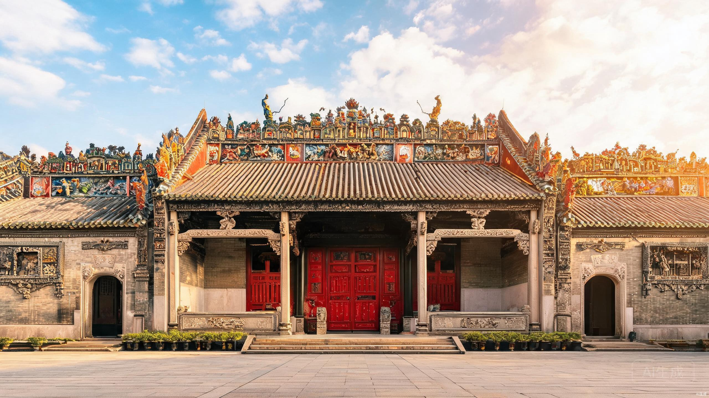
广州岭南建筑天花板级别古建，融合"三雕两塑"工艺。屋顶梁山聚义陶塑瓦脊是镇馆亮点。门票10元，游玩1.5小时，09:00-17:30开放。重点逛回廊、正殿细节，不要只拍外景。
中午 | 永庆坊 + 荔枝湾涌
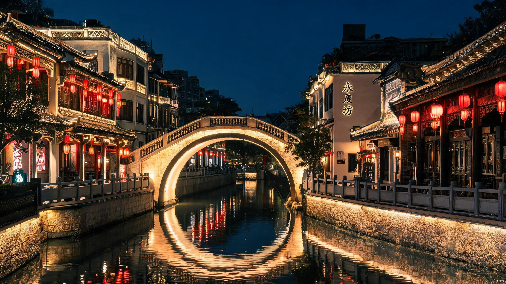
保留完整岭南骑楼、镬耳屋古建筑群。核心打卡：网红月亮桥、李小龙祖居、粤剧艺术博物馆。荔枝湾涌可坐手摇小船游涌。必吃：陈添记爽脆鱼皮、伍湛记及第粥。免费，游玩1.5小时。
下午 | 沙面岛
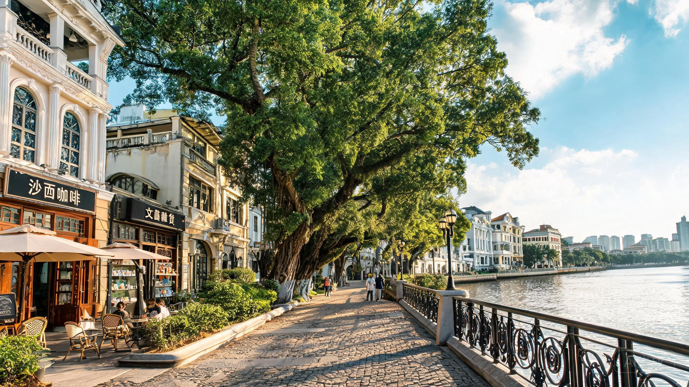
清代英法租界旧址，古树参天、林荫茂密，临江步道干净治愈。遍布复古咖啡馆、文艺小店，免费拍照圣地。从永庆坊步行约20分钟可达，游玩2小时。
晚上 | 北京路步行街 + 大佛寺
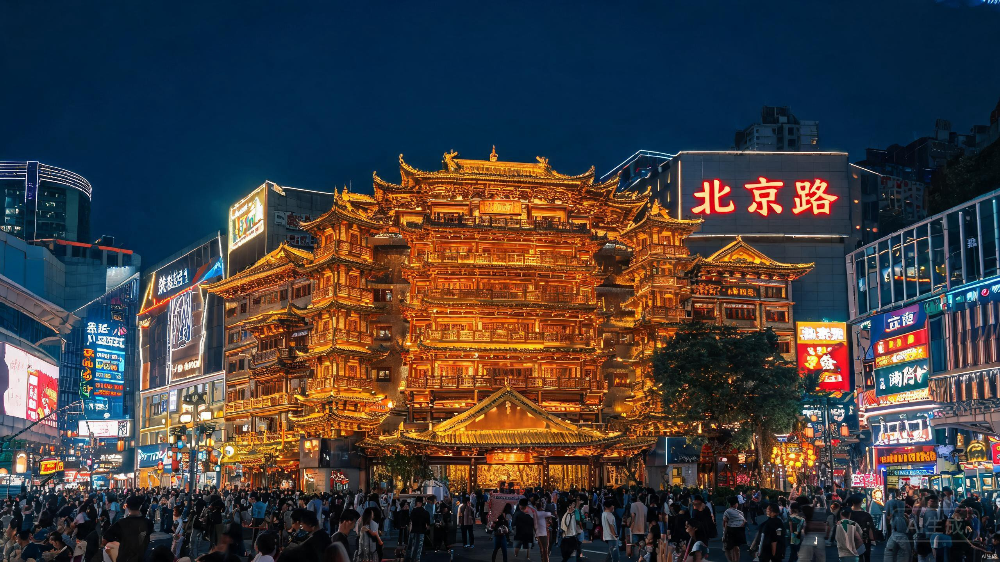
路面透明玻璃下完整保留唐宋元明清五代古道遗址。大佛寺每晚19:00整体亮灯，金碧辉煌。美食集中地：惠福东路（煲仔饭、牛杂、啫啫煲、广式糖水）。
Day 2 越秀老城历史线
南越王博物院 → 石室大教堂 → 一德路 → 北京路日景住宿：大石地铁站 | 主题：广州两千年的历史厚度
当日行程时间轴
| 时间 | 行程 | 交通工具 | 路上耗时 |
|---|---|---|---|
| 08:30 | 酒店（大石）出发 | — | — |
| 08:30-09:15 | 大石 → 南越王博物院 | 地铁3号线→2号线 | 约35-40分钟 |
| 09:15-11:00 | 游览南越王博物院（王墓展区） | 步行 | 游玩1.5小时 |
| 11:00-11:20 | 南越王博物院 → 石室大教堂 | 步行/地铁2号线（2站） | 约15-20分钟 |
| 11:20-12:45 | 游览石室圣心大教堂 | 步行 | 游玩1.5小时 |
| 12:45-13:45 | 午餐（一德路/海珠广场周边） | 步行 | 约1小时 |
| 13:45-14:00 | 石室大教堂 → 北京路 | 地铁2号线（1站） | 约10-15分钟 |
| 14:00-17:00 | 北京路日景 + 古道遗址 + 书店 | 步行 | 游玩3小时 |
| 17:00-17:30 | 北京路 → 文明路 | 步行/地铁1号线 | 约10-15分钟 |
| 17:30-19:00 | 文明路美食街晚餐 + 糖水 | 步行 | 约1.5小时 |
| 19:00-19:50 | 文明路 → 酒店（大石） | 地铁1号线→3号线 | 约40-50分钟 |
上午 | 南越王博物院（王墓展区）
依托2000多年前西汉南越王古墓原址打造。镇馆国宝：丝缕玉衣、文帝行玺金印。可实地走入真实古墓墓室。门票12元，游玩1.5小时，09:00-17:30开放（周一闭馆）。
上午 | 石室圣心大教堂
国内最大、全球罕见的全石结构哥特式大教堂，双尖塔高达58.5米。阳光穿透彩色玻璃窗时，室内光影梦幻治愈。注意：周一全天闭馆，禁止穿吊带、短裙。
下午 | 北京路日景 + 文明路美食
白天再看北京路，重点是千年古道遗址（透明玻璃下的宋代路面）和联合书店、1200bookshop等文艺书店。文明路是广州老牌糖水街，百花甜品、达杨炖品、玫瑰甜品都在此。
Day 3 天河CBD地标线
省博物馆 → 花城广场 → 海心桥 → 广州塔 → 珠江夜游住宿：大石地铁站 | 主题：现代广州城市名片
当日行程时间轴
| 时间 | 行程 | 交通工具 | 路上耗时 |
|---|---|---|---|
| 09:00 | 酒店（大石）出发 | — | — |
| 09:00-09:30 | 大石 → 广东省博物馆 | 地铁3号线直达 | 约25-30分钟 |
| 09:30-12:00 | 游览广东省博物馆 | 步行 | 游玩2.5小时 |
| 12:00-12:15 | 省博 → 花城汇 | 步行 | 约10分钟 |
| 12:15-13:30 | 午餐（花城汇商圈） | 步行 | 约1小时 |
| 13:30-15:30 | 花城广场 + 海心沙漫步 | 步行 | 约2小时 |
| 15:30-17:30 | 海心桥拍照 + 珠江边漫步 | 步行 | 约2小时 |
| 17:30-18:30 | 广州塔周边晚餐 | 步行/APM线 | 约1小时 |
| 18:30-19:20 | 前往天字码头 | 打车/地铁3号线→6号线 | 约30-40分钟 |
| 19:30-20:30 | 珠江夜游（天字码头→广州塔） | 游船 | 约60分钟 |
| 20:30-21:10 | 广州塔 → 酒店（大石） | 地铁3号线直达 | 约30-40分钟 |
上午 | 广东省博物馆
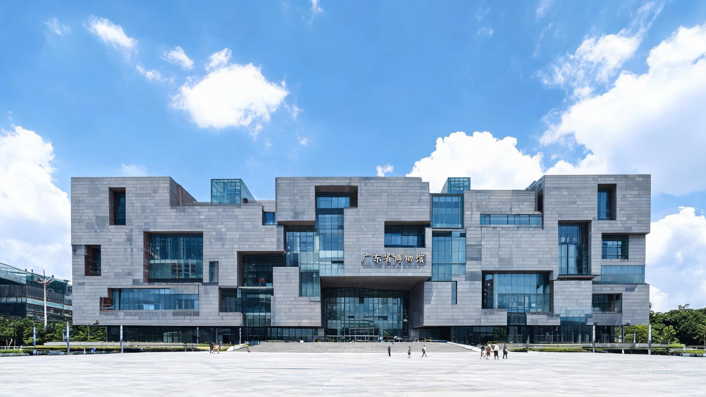
镇馆之宝：网红陶塑白切鸡、巨型恐龙化石、海上丝绸之路文物、广彩瓷器。三楼夹层海底风展厅是网红拍照机位。免费，但必须提前3天公众号预约！周一闭馆。游玩2-2.5小时。
下午 | 花城广场 + 海心沙 + 海心桥
广州城市新中轴线核心广场，可同时拍摄广州塔、东塔、西塔CBD三件套同框全景。海心沙是亚运会开幕式主场馆，临江草坪开阔。海心桥是广州首座跨珠江人行桥，免费拍广州塔的最佳机位。
晚上 | 广州塔 + 珠江夜游
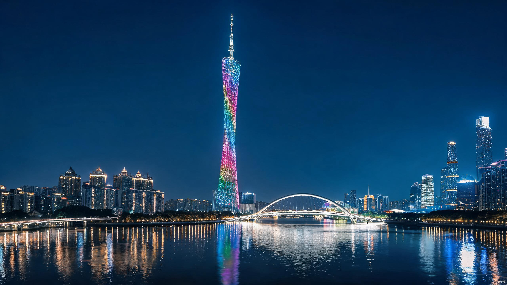
省钱版：江边散步，19:00看免费灯光秀，无需登塔。体验版：登塔观光+高空摩天轮。强烈推荐：珠江夜游（天字码头→广州塔航段约60分钟，票价78元），船上欣赏两岸夜景。
Day 4 东山口+海珠文艺线
东山口 → 有轨电车 → 琶醍 → 太古仓码头住宿：大石地铁站 | 主题：文艺青年打卡日
当日行程时间轴
| 时间 | 行程 | 交通工具 | 路上耗时 |
|---|---|---|---|
| 09:30 | 酒店（大石）出发 | — | — |
| 09:30-10:00 | 大石 → 东山口 | 地铁3号线→1号线 | 约30分钟 |
| 10:00-12:30 | 东山口文艺街区慢逛 | 步行 | 游玩2.5小时 |
| 12:30-13:30 | 午餐（东山口特色餐厅） | 步行 | 约1小时 |
| 13:30-14:00 | 东山口 → 广州塔 | 地铁1号线→3号线 | 约25-30分钟 |
| 14:00-14:30 | 广州塔有轨电车体验 | 有轨电车THZ1 | 约30分钟 |
| 14:30-16:00 | 琶醍创意园 | 步行 | 游玩1.5小时 |
| 16:00-16:35 | 琶醍 → 太古仓码头 | 打车/地铁8号线 | 约25-35分钟 |
| 16:35-18:30 | 太古仓码头日落 + 晚餐 | 步行 | 约1小时55分钟 |
| 18:30-19:20 | 太古仓 → 酒店（大石） | 地铁8号线→3号线 | 约40-50分钟 |
上午 | 东山口文艺街区
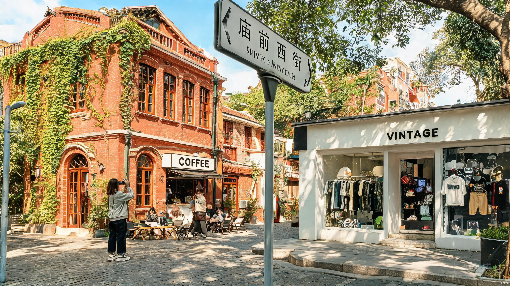
广州最新晋的文艺打卡地！庙前西街、培正路聚集大量复古咖啡馆、买手店、红砖洋房，与沙面的欧式风格不同，这里是民国洋楼与潮流文化的碰撞。免费慢逛2.5小时，推荐咖啡馆歇脚。
下午 | 有轨电车 + 琶醍创意园
从广州塔乘坐有轨电车THZ1（最美7.7公里），沿江行驶可欣赏珠江两岸风光。琶醍是珠江啤酒厂改造的文创园区，工业风建筑+江景餐吧，白天适合拍照，夜晚变身酒吧街。
傍晚 | 太古仓码头
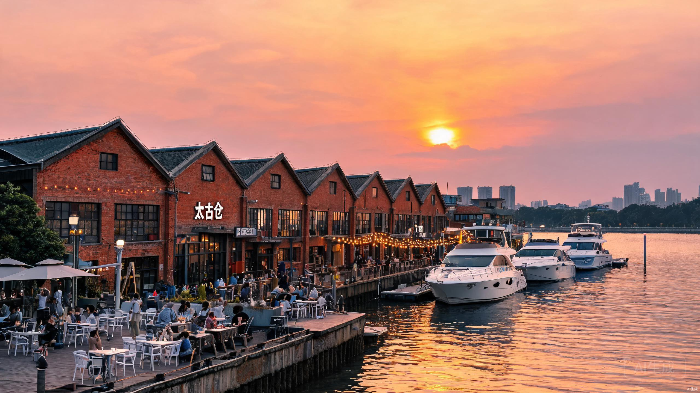
由上世纪英国洋行仓库改造的滨江文创区，红砖建筑+白色游艇+江景餐吧，日落时分最美。推荐傍晚到此，选一家江景餐厅晚餐。免费，游玩1.5-2小时。
Day 5 长隆嗨玩日 + 大马戏
早茶 → 欢乐世界 → 国际大马戏住宿：大石地铁站 | 主题：尖叫与欢笑的一天
当日行程时间轴
| 时间 | 行程 | 交通工具 | 路上耗时 |
|---|---|---|---|
| 08:00 | 酒店（大石）出发 | — | — |
| 08:00-08:15 | 大石 → 早茶店 | 地铁3号线（1站） | 约10分钟 |
| 08:15-10:00 | 广式早茶 | 步行 | 约1小时45分钟 |
| 10:00-10:15 | 早茶店 → 长隆欢乐世界 | 地铁3号线（1站）/步行 | 约10-15分钟 |
| 10:15-17:30 | 长隆欢乐世界畅玩 | 园内步行 | 游玩约7小时 |
| 15:00 | 花车大巡游（固定演出） | — | 约30分钟 |
| 17:30-18:30 | 晚餐（长隆周边） | 步行 | 约1小时 |
| 18:30-18:40 | 前往长隆国际大马戏 | 步行/免费穿梭巴士 | 约10分钟 |
| 18:40-19:30 | 进场选座 + 等待开演 | — | 约50分钟 |
| 19:30-21:00 | 长隆国际大马戏 | — | 演出90分钟 |
| 21:00-21:15 | 返回酒店（大石） | 地铁3号线（1站）/步行 | 约10-15分钟 |
上午 | 广式早茶
来广州必体验早茶文化！建议8:15-10:00在大石附近或汉溪长隆站周边享用。推荐点都德、陶陶居、广州酒家，必点：虾饺、烧卖、凤爪、肠粉、流沙包。早茶人均80-100元。
全天 | 长隆欢乐世界
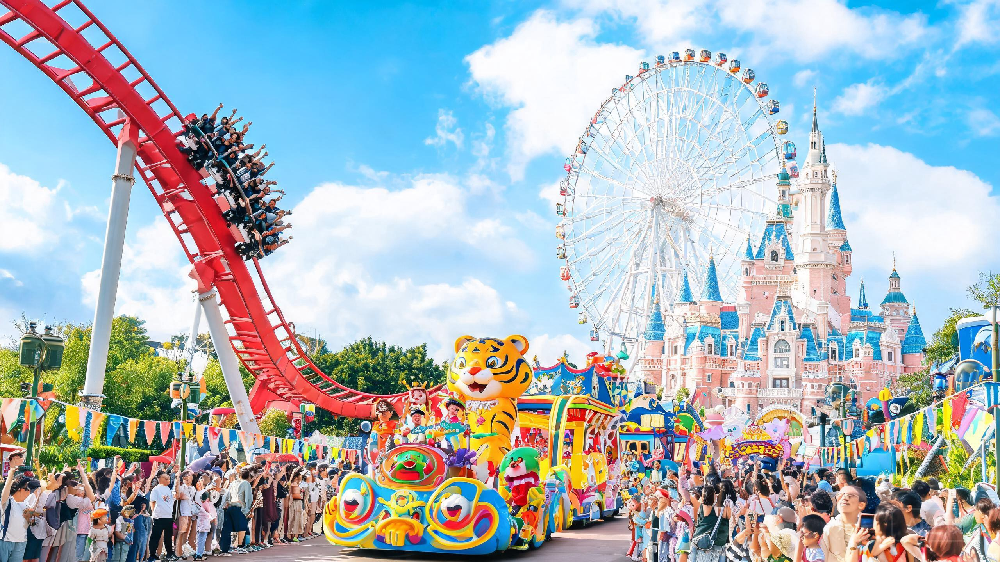
硬核刺激必玩（1.4米以上）：垂直过山车、十环过山车、火箭过山车、摩托过山车、超级大摆锤、U型滑板、自由落体、急流勇进（自备雨衣）。温和休闲必玩：飞马家庭过山车、双层梦幻转马、欢乐摩天轮、4D影院。固定演出：15:00花车大巡游（巡游期间热门项目排队骤减）。
省钱提速技巧：所有过山车支持单人通道，排队直接减半！
晚间 | 长隆国际大马戏
19:30-21:00，90分钟无间断演出。王牌节目：环球摩托飞车、高空特技飞人、魔幻火轮。17:30开放进场，普通座先到先得，优选中区中段。
Day 6 番禺岭南园林慢游
余荫山房 → 宝墨园 → 紫泥堂住宿：大石地铁站 | 主题：古典园林与工业文创的碰撞
当日行程时间轴
| 时间 | 行程 | 交通工具 | 路上耗时 |
|---|---|---|---|
| 08:30 | 酒店（大石）出发 | — | — |
| 08:30-09:10 | 大石 → 余荫山房 | 地铁3号线→7号线 | 约35-40分钟 |
| 09:10-10:40 | 游览余荫山房 | 步行 | 游玩1.5小时 |
| 10:40-11:00 | 余荫山房 → 宝墨园 | 打车/网约车 | 约15-20分钟 |
| 11:00-13:00 | 游览宝墨园 | 步行 | 游玩2小时 |
| 13:00-14:00 | 午餐（宝墨园周边） | 步行 | 约1小时 |
| 14:00-14:15 | 宝墨园 → 紫泥堂 | 打车/网约车 | 约10分钟 |
| 14:15-15:15 | 游览紫泥堂创意园 | 步行 | 游玩1小时 |
| 15:15-16:00 | 紫泥堂 → 酒店（大石） | 地铁7号线→3号线 | 约40-45分钟 |
| 16:00-18:00 | 酒店休息 / 大石周边自由活动 | — | 约2小时 |
| 18:00-19:30 | 晚餐（大石植村夜市） | 步行 | 约1.5小时 |
上午 | 余荫山房（广东四大名园）
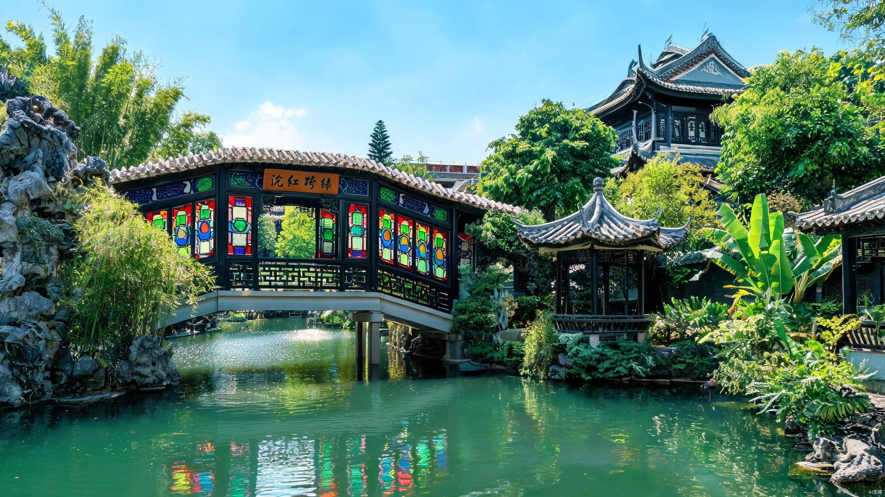
广东四大名园中最精致、最小众、人最少的一座。标志性景观"浣红跨绿"廊桥极具诗意，彩色满洲窗光影错落绝美。门票18元，游玩1-1.5小时，08:00-18:00开放。
中午 | 宝墨园
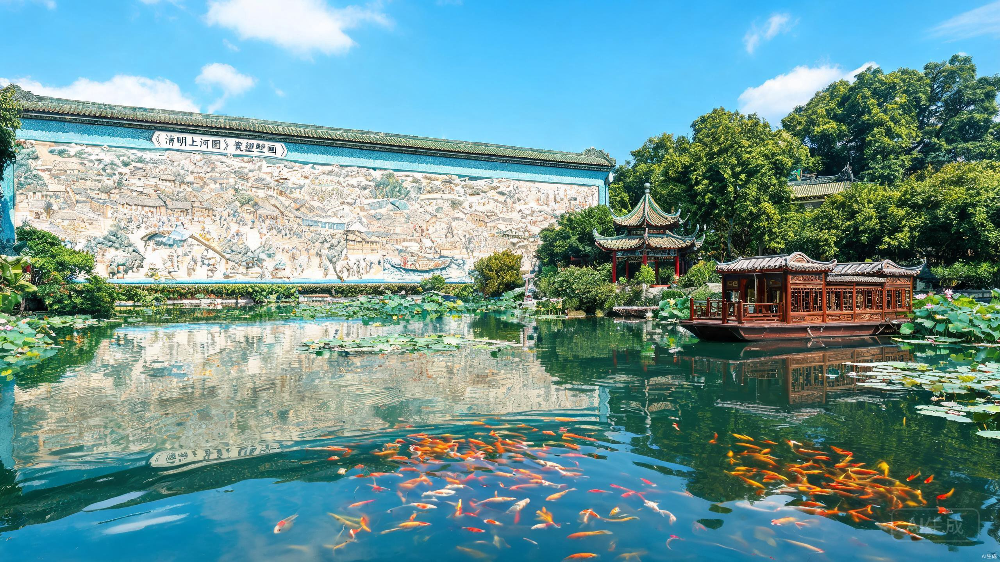
超大沉浸式岭南水乡园林，拥有吉尼斯纪录62米《清明上河图》瓷塑壁画、仿古画舫紫洞舫。锦鲤成群可投喂，绿树成荫适合避暑。门票54元，游玩2小时。
下午 | 紫泥堂创意园
旧糖厂改造的工业风文创园区，大烟囱、复古厂房、涂鸦墙小众出片。免费，游玩1小时。与宝墨园距离近，打车10分钟可达。下午回酒店较早，可在大石植村夜市体验地道广州宵夜文化。
Day 7 佛山武术与陶都文化
祖庙 → 南风古灶 → 岭南天地夜游住宿：大石地铁站 | 主题：武林佛山·千年陶都（当日往返）
当日行程时间轴
| 时间 | 行程 | 交通工具 | 路上耗时 |
|---|---|---|---|
| 08:00 | 酒店（大石）出发 | — | — |
| 08:00-08:45 | 大石 → 佛山祖庙 | 地铁3号线→广佛线 | 约40-45分钟 |
| 08:45-11:45 | 游览佛山祖庙 | 步行 | 游玩3小时（10:00 醒狮） |
| 11:45-13:00 | 午餐（祖庙/岭南天地周边） | 步行 | 约1小时15分钟 |
| 13:00-13:20 | 祖庙 → 南风古灶 | 公交/打车 | 约15-20分钟 |
| 13:20-15:30 | 游览南风古灶 | 步行 | 游玩2小时 |
| 15:30-15:45 | 南风古灶 → 岭南天地 | 打车/公交 | 约10-15分钟 |
| 15:45-18:00 | 岭南天地下午茶 + 逛街 | 步行 | 约2小时15分钟 |
| 18:00-19:30 | 岭南天地晚餐 + 夜游 | 步行 | 约1.5小时 |
| 19:30-20:15 | 岭南天地 → 酒店（大石） | 地铁广佛线→3号线 | 约40-45分钟 |
上午 | 佛山祖庙
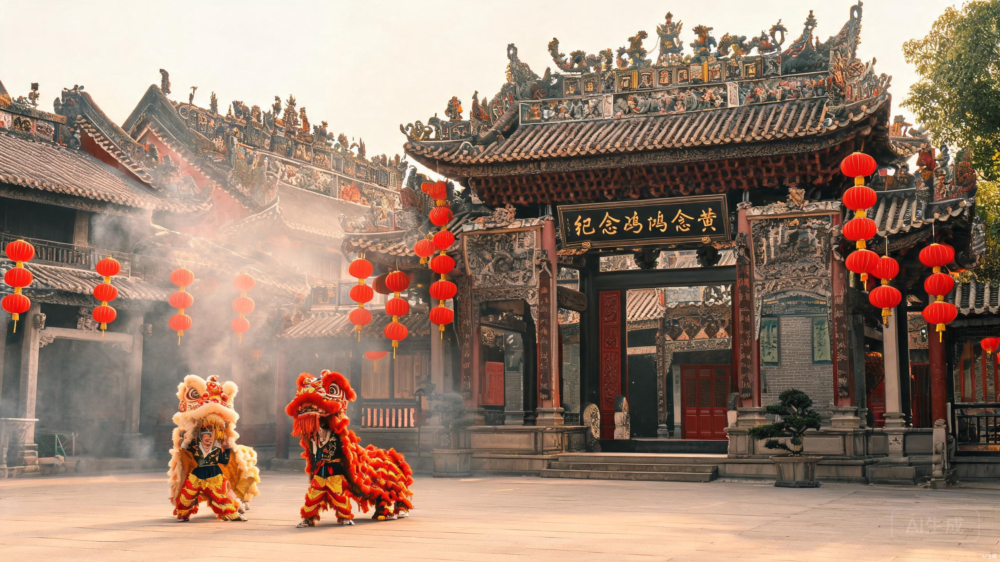
佛山必打卡，岭南建筑三大瑰宝之一！始建于北宋，集古建、雕刻、武术、粤剧于一体。黄飞鸿纪念馆、叶问堂都在这里。每天10:00和15:00有醒狮表演，不容错过。门票20元，游玩2.5-3小时。
下午 | 南风古灶（500年古窑）
世界现存最古老的柴烧龙窑，500年窑火不熄。可亲手体验拉坯制陶，周边文艺小店云集。免费开放区够逛2小时，若想体验陶艺需另付费。与高庙、公仔街连成一片，适合文艺青年。
晚间 | 岭南天地慢逛与夜游
由东华里古建筑群改造的岭南风情商业街区，镬耳屋、青砖墙、石板路在灯光下格外浪漫。与广州永庆坊类似但更具佛山本土特色。下午可逛文创小店、喝咖啡，晚餐和夜游一并在此解决，佛山扎蹄、盲公丸、双皮奶都值得尝试。
Day 8 顺德美食与园林水乡
清晖园 → 华盖路 → 逢简水乡（当日往返）住宿：大石地铁站 | 主题：为食顺德·舌尖朝圣（当日往返，早出晚归）
当日行程时间轴
| 时间 | 行程 | 交通工具 | 路上耗时 |
|---|---|---|---|
| 07:30 | 酒店（大石）出发 | — | — |
| 07:30-08:30 | 大石 → 顺德大良 | 打车（推荐）/ 地铁3号线→7号线→佛山3号线 | 约40-50分钟（打车）/ 约1.5小时（地铁） |
| 08:30-10:30 | 游览清晖园 | 步行 | 游玩2小时 |
| 10:30-12:30 | 华盖路步行街美食 | 步行 | 约2小时 |
| 12:30-13:10 | 大良 → 逢简水乡 | 打车 | 约30-40分钟 |
| 13:10-15:30 | 游览逢简水乡（含午餐） | 步行/摇橹船 | 游玩2.5小时 |
| 15:30-16:10 | 逢简 → 大良 | 打车 | 约30-40分钟 |
| 16:10-17:40 | 大良 → 酒店（大石） | 地铁佛山3号线→7号线→3号线 | 约1.5小时 |
| 18:00 | 回到大石，晚餐自理 | — | — |
上午 | 清晖园（岭南四大名园之首）
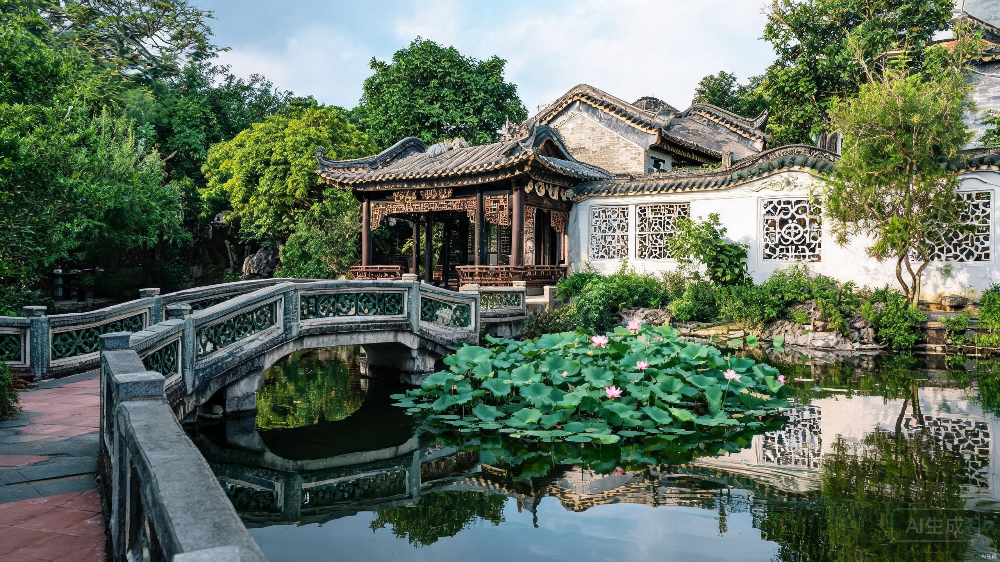
岭南四大名园之首，比苏州园林更热情！始建于明代，园内有碧溪草堂、惜阴书屋、真砚斋等经典建筑，碧水、绿树、古亭、漏窗、石山融为一体。门票15元，游玩2小时。
中午 | 华盖路步行街·寻味顺德
顺德美食核心区！民信老铺/仁信老铺双皮奶、姜撞奶不可错过；欢姐伦教糕软糯清甜；细妹牛杂排队王；李禧记蹦砂手信必买。预算100元吃到撑！
下午 | 逢简水乡（广东周庄）
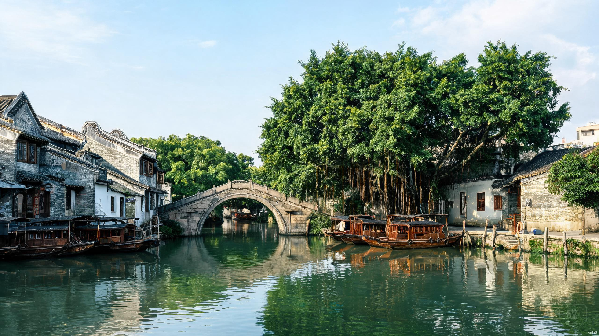
被称为"广东周庄"的千年水乡，巨济桥、明远桥、金鳌桥三座古桥横跨河道。可乘摇橹船（约30元/人）穿行于水巷之间，两岸祠堂、古树、民居如画。免费，游玩2-3小时。
Day 9 南沙滨海风光
天后宫 → 湿地公园 → 十九涌海鲜（当日往返）住宿：大石地铁站 | 主题：滨海祈福·湿地观鸟（当日往返）
当日行程时间轴
| 时间 | 行程 | 交通工具 | 路上耗时 |
|---|---|---|---|
| 07:30 | 酒店（大石）出发 | — | — |
| 07:30-09:15 | 大石 → 南沙天后宫 | 地铁3号线→4号线→南沙客运港 | 约1.5小时 |
| 09:15-12:00 | 游览南沙天后宫 | 步行 | 游玩2.5-3小时 |
| 12:00-13:00 | 午餐（南沙天后宫周边） | 步行 | 约1小时 |
| 13:00-13:30 | 天后宫 → 南沙湿地 | 公交/打车 | 约15-20分钟 |
| 13:30-16:00 | 南沙湿地公园 | 园内步行/游船 | 游玩2.5小时 |
| 16:00-16:30 | 湿地 → 十九涌渔人码头 | 打车/公交 | 约15-20分钟 |
| 16:30-18:00 | 十九涌海鲜市场晚餐 | 步行 | 约1.5小时 |
| 18:00-19:30 | 十九涌 → 酒店（大石） | 地铁4号线→3号线 | 约1.5小时 |
上午 | 南沙天后宫（东南亚最大妈祖庙）
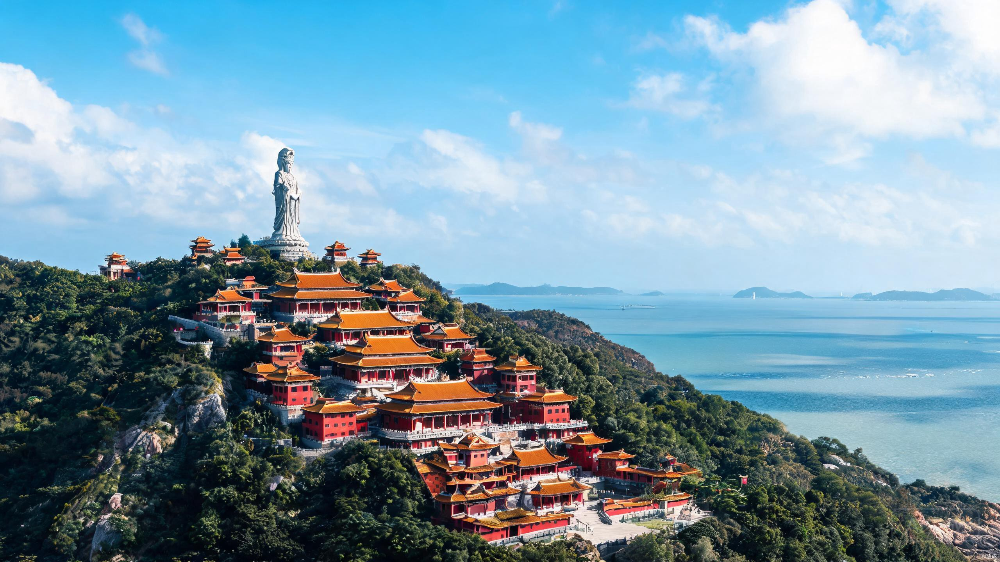
东南亚规模最大的妈祖庙！依山傍海，建筑仿故宫格局，层层递进的殿堂气势恢宏。山顶可俯瞰珠江入海口，海天一色。门票20元，游玩2-2.5小时。推荐乘地铁4号线到南沙客运港站。
下午 | 南沙湿地公园
广州最大的湿地公园，候鸟迁徙重要驿站。冬季可观万鸟齐飞，夏季荷花满塘。可乘游船深入芦苇荡，近距离接触自然。门票40元（含游船），游玩2-3小时。
傍晚 | 十九涌渔人码头
南沙最地道的海鲜市场，现买现加工。黄油蟹、南沙鲈鱼、奄仔蟹都是当地特产。市场二楼有多家加工餐厅，加工费约15-25元/斤。人均100-150元可吃得丰盛。
Day 10 黄埔历史印记 + 收官购物
黄埔军校 → 南海神庙 → 北京路购物（当日往返）住宿：大石地铁站 | 主题：百年军校·海丝遗风（当日往返）
当日行程时间轴
| 时间 | 行程 | 交通工具 | 路上耗时 |
|---|---|---|---|
| 08:00 | 酒店（大石）出发 | — | — |
| 08:00-09:15 | 大石 → 黄埔军校旧址 | 地铁3号线→5号线→鱼珠站→轮渡 | 约1-1.25小时 |
| 09:15-11:45 | 游览黄埔军校旧址 | 步行 | 游玩2.5小时 |
| 11:45-12:20 | 军校 → 南海神庙 | 公交/打车 | 约20-30分钟 |
| 12:20-13:20 | 午餐（庙头周边） | 步行 | 约1小时 |
| 13:20-14:50 | 游览南海神庙 | 步行 | 游玩1.5小时 |
| 14:50-15:40 | 南海神庙 → 北京路 | 地铁13号线→5号线→2号线 | 约40-50分钟 |
| 15:40-18:00 | 北京路购物 + 手信采购 | 步行 | 约2.5小时 |
| 18:00-19:30 | 北京路晚餐（Farewell Dinner） | 步行 | 约1.5小时 |
| 19:30-20:15 | 北京路 → 酒店（大石） | 地铁2号线→3号线 | 约40-45分钟 |
上午 | 黄埔军校旧址纪念馆
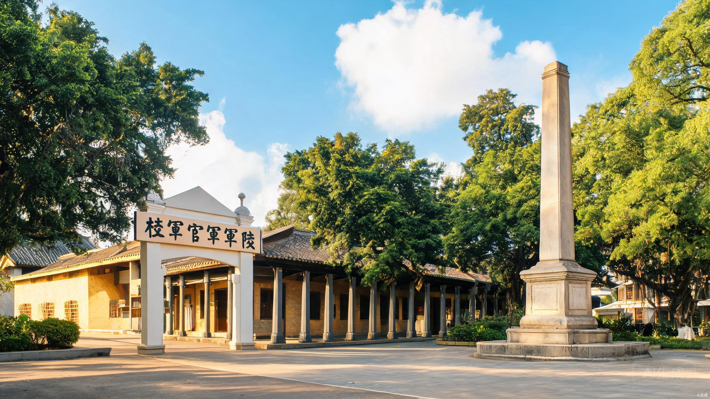
近代中国最著名的军事学府！孙中山创办，蒋介石、周恩来都曾任职。校本部复原了校长室、学生宿舍、教室等场景。需在公众号提前预约，免费参观，游玩2-2.5小时。交通较复杂：地铁5号线鱼珠站+轮渡（2元）或打车直达。
下午 | 南海神庙（海上丝绸之路起点）
始建于隋代，是中国古代四大海神庙中唯一保存至今的，也是海上丝绸之路重要起点。碑林、古码头、番鬼楼遗址都值得细看。门票10元，游玩1.5小时。
傍晚 | 北京路收官
从大石出发，下午抵达北京路进行最后的购物和手信采购。推荐手信：莲香楼鸡仔饼、皇上皇腊肠、李禧记蹦砂、广州酒家糕点。晚餐选一家心仪餐厅，为10天旅程画上圆满句号，餐后地铁返回大石。
三、美食地图·按区域分类
广州10天，吃是重头戏。以下按区域整理必吃清单，方便就近打卡：
西关片区（荔湾）
- 必吃陈添记（十五甫三巷）— 爽脆鱼皮、艇仔粥
- 必吃伍湛记（龙津东路）— 及第粥、咸煎饼
- 必吃南信牛奶（第十甫路）— 双皮奶、姜撞奶
- 推荐顺记冰室 — 椰子雪糕、芒果雪糕
- 推荐宝华面店 — 鲜虾云吞面
北京路片区（越秀）
- 必吃银记肠粉 — 布拉肠粉、牛肉肠
- 必吃达扬原味炖品（文明路）— 椰子炖竹丝鸡
- 推荐玫瑰甜品 — 凤凰奶糊、杏仁豆腐
- 推荐百花甜品 — 红豆沙、绿豆沙
早茶推荐（全城连锁）
- 高端广州酒家 / 白天鹅宾馆·玉堂春暖 — 传统派，人均150+
- 中端陶陶居 / 点都德 — 性价比之选，人均80-100
- 亲民禄运茶居 / 又一间茶点轩 — 本地人常去，人均50-70
顺德专区（大良）
- 必吃民信老铺/仁信老铺 — 双皮奶、姜撞奶
- 必吃欢姐伦教糕 — 白糖糕、黄糖糕
- 必吃细妹牛杂 — 五香牛杂、萝卜
- 推荐猪肉婆私房菜 — 烧鹅、盐油饭（需预约）
- 推荐松记食店 — 清水打边炉
佛山专区
- 必吃应记鲜虾云吞面 — 竹升面、鲜虾云吞
- 推荐佛山盲公丸 — 岭南天地内有售
- 推荐得心斋扎蹄 — 百年老字号酝扎蹄
四、实用贴士
交通卡与出行
- 岭南通/羊城通：地铁公交通用，押金18元，各站客服中心可办。手机NFC版更方便。
- 广佛同城：地铁广佛线连通广州佛山，换乘无需出站，票价按里程统一计算。Day 7 佛山往返非常方便。
- 顺德交通（Day 8）：大石→大良地铁约1.5小时，打车约40-50分钟（80-120元）。大良→逢简水乡打车约30-40分钟（30-50元）。当日往返早出晚归，建议去程打车节省体力。
- 南沙出行（Day 9）：大石→南沙天后宫地铁约1.5小时（3号线→4号线→南沙客运港），景区间建议打车或骑共享电动车。
- 黄埔出行（Day 10）：大石→黄埔军校地铁约1-1.25小时（3号线→5号线→鱼珠站→轮渡），轮渡2元/人。
- 全程不搬酒店：10天都住大石，每天带好随身物品出发即可，晚上回同一酒店休息，无需打包行李。
门票预约
- 广东省博物馆：免费，需提前在公众号预约，周末建议提前3-5天。
- 黄埔军校：免费，需在"黄埔军校旧址纪念馆"公众号预约。
- 陈家祠：10元，可现场扫码购票，节假日建议提前预约。
- 长隆：建议提前在官方渠道购票，常有早鸟优惠。大马戏普通座无需选座，先到先得。
天气与穿搭
- 夏季（6-9月）：高温湿热，必备防晒霜、遮阳帽、便携风扇、驱蚊液。室内空调很冷，带薄外套。
- 雨季：随时可能突降暴雨，随身带折叠伞。
- 舒适鞋：每天步行1.5-2万步，务必穿舒适运动鞋。
预算参考（10天/人）
| 项目 | 经济型 | 舒适型 |
|---|---|---|
| 住宿（10晚，全程大石） | 2000-3000元 | 4000-6000元 |
| 门票 | 400-500元 | 600-800元 |
| 餐饮 | 1200-1500元 | 2000-2500元 |
| 市内交通（含跨城） | 300-450元 | 450-600元 |
| 总计 | 3900-5450元 | 7050-9950元 |
省钱提示：全程住大石不搬酒店，省去了换酒店的时间和打车费；Day 8顺德建议打车往返（约80-120元/程），地铁虽然便宜但耗时1.5小时，早出晚归太累，打车可节省近2小时。
避坑提醒
- 北京路、上下九的"老字号"有些已变味，认准本地人排队的老店。
- 长隆园区内餐饮较贵，可自带少量干粮和水。
- 逢简水乡游船可砍价，标价与实付常有差距。
- 南沙天后宫山道较长，建议穿运动鞋，备好饮用水。
- 广州地铁高峰期（8:00-9:30，17:30-19:00）3号线非常拥挤，尽量错峰。